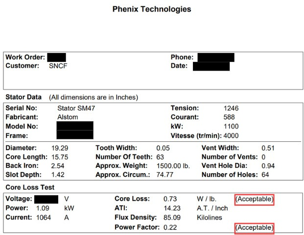

Apprentissage Critique : Évaluer la cause racine d'un dysfonctionnement (AC32.01)
Dans le cadre de mon alternance chez SNCF Voyageurs, j'ai été amené à expertiser deux moteurs de traction ferroviaire suite à des vibrations anormales. Pour la série de moteurs concernée, ce retour alors jugé précoce m'a conduit à mettre en place une série de tests électriques pour en évaluer la cause racine. Étant habilité aux risques électriques et formé aux mesures d'isolement, aux mesures vibratoires et aux mesures de pertes fer, j'ai pu rejoindre la plateforme d'essai dynamique du technicentre industriel de Vénissieux pour diagnostiquer les deux moteurs.
À la manière d'un médecin, avant de procéder aux tests et aux démontages des moteurs, nous avons mené une enquête préliminaire visant à les ordonnancer : l'objectif est de cibler efficacement les pièces les plus probablement endommagées à ce stade de vie du moteur. Dans notre cas, les roulements — de petits mécanismes métalliques destinés à transmettre un mouvement rotatif — sont les causes principales des retours prématurés. Nous avons procédé en trois étapes :
Déroulez le rapport PDF ci-dessous pour consulter le détail des tests effectués en plateforme.
Résultat des mesures électriques obtenues sur le banc de test de pertes fer CL60B.

Cette expertise m'a conduit à adopter une posture d'ingénieur de maintenance. Avec une approche logique et rigoureuse, j'ai réalisé une série de quatre tests électriques statiques et dynamiques, puis procédé à un démontage pour une inspection mécanique complète (vérification de l'équilibrage, des couples de serrage, de l'état général des pièces : pignons, roulements, demi-accouplement, flasque, balais…). Ce type d'expertise illustre parfaitement la complémentarité entre la mécanique et l'électrique, et m'incite à acquérir un profil plus généraliste pour répondre à chaque problématique d'ingénierie de maintenance.
Les mesures vibratoires s'effectuent à l'aide d'accéléromètres, avec pour objectif de mesurer des vibrations inaudibles afin d'obtenir un spectre fréquentiel. Ce spectre permet de distinguer l'état d'usure de chaque pièce du moteur en fonction de sa fréquence. Pour réussir une mesure vibratoire, de nombreuses précautions s'imposent : le support sur lequel est installé le moteur (rigide), les zones de fixation des accéléromètres (à proximité des roulements, sur une zone statique du moteur), et le mode de fixation des accéléromètres (collés sur pastille, vissés au moteur, éviter les pointes de touche).
Voir la compétence Installer avec le banc de test de pertes fer. L'objectif de ce test est de reproduire le champ magnétique d'un moteur en fonctionnement en injectant un courant fort (jusqu'à 2000A) à travers le circuit magnétique d'un moteur à l'arret. Cela produira des echauffements et des pertes de puissances que nous mesurons.
Voir la compétence Maintenir avec l'étude de coût global de roulement vs roulement hybride.Il s'agit d'une pièce mécanique qui fait le pont entre une zone rotative du moteur, le rotor, et une zone statique du moteur, le stator. Concrètement c'est un anneau composé d'une bague interrieure rotative, de billes ou de rouleaux, et d'une bague exterrieure fixe.